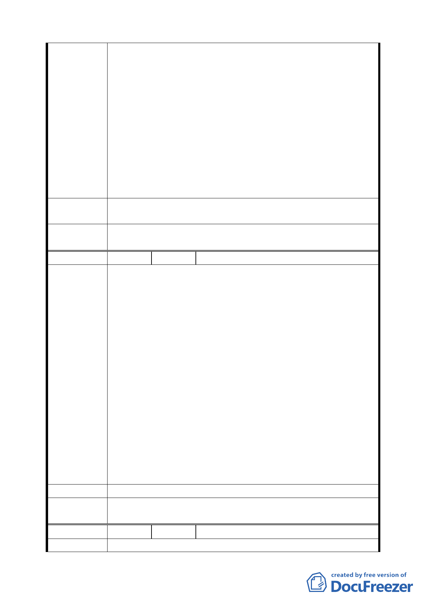

地之開發利益，而將本局經管原已劃定為「一般商業區」
之 D1 用地（東半街廓）逕提都市計畫變更，實有違協商應
互信、互重之精神，基於維護權益之立場，本局無法接受。
2.市府與本局雙方合作土地開發，首應符合行政院歷來就本
車站特定專用區「整體開發」意旨及全民期待，本特定區
另 E 及 D1（西半街廓）保留區用地，自 82 年 9 月至今 12
年餘未頒訂都市計畫，造成本特定區良窳並存之景觀，市
府不應僅針對 C1、D1 東半街廓作切割式的規劃，而漠視本
特定區國家門戶之整體塑造，市府捷運局在大眾捷運法已
排除「聯合開發」模式，而子法「大眾捷運系統開發辦法」
尚保留「聯合開發」模式之矛盾機制情形下，以自行適用
之條款辦理聯合開發實待商榷。
建議辦法
本局籲請市府應在貴我協商達成共識後，併入都市計畫整體規
劃，再行辦理後續作業，以免影響國家交通建設時程。
委員會決議
請臺北市政府就本案以及後續有關臺北車站特定專用區整體
規劃，充分與臺灣鐵路局溝通。
編 號 2 陳情人 陳鼎彝（交八代表）
1.建議地點北市中正區公園段一小段 193 至 205 地號，門牌
號碼中正區忠孝西路一段 193 至 205 號。
2.臺北車站特定專用區細部計畫於 70 年因臺北車站東移，76
年都委會計畫「交八」為「商四」用地，後又變為「交八」，
民極力反對，後由黃市長大洲於都委會開會當場表示，應
補償交八地主以 C1 土地交換，私有地主自己聯合興建大
樓，都委會有公文通知在案，今 C1 土地又變更為捷運用地，
佔用地下樓，私有地主損失慘重，再加興建高樓，建築費
陳 情 理 由 困難應付。
3.82 年交八廣場變更迄今 12 年，尚未全部實施，有違都市計
畫法，應從新擬議恢復「商四」用地，私有大樓拆除，使
人民失去營業場所，並以土地徵收半價補償，人民損失慘
重，公用如鐵路警察局等房地未拆尚未徵收，恢復為「商
四」，有助市府財產收益，解決困難。
4.交八地下沒有路軌設施，係臨忠孝西路 40 公尺大道，變更
為交八廣場用地是不合理，侵犯人民財產權益，擬向市議
會陳情訴願，或向行政法院訴訟。
建 議 辦 法 要求政府補償或將「交八」變回「商四」用地
委員會決議
本案有關後續聯合開發事宜，請臺北市政府捷運工程局妥與
私有土地所有權人協調。
編
號3
陳情人 臺北市政府交通局
陳情理由 1.配合未來高速鐵路及中正機場捷運系統等大眾運輸系統開
二一